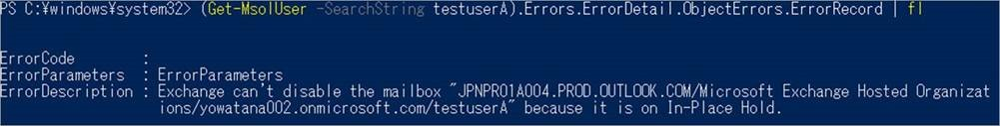

こんにちは、Exchange サポートの渡辺です。
Exchange Online をお使いいただいているお客様もかなり増えている中、これからオンプレミスの Exchange から移行を予定されている、あるいは今が移行の真っ最中というお客様もいらっしゃるかもしれません。
オンプレミスから移行頂く場合、Exchange のハイブリッド環境を構成いただくことが一般的ではありますが、ハイブリッド構成ではディレクトリ同期が必須のため、ユーザーやメールボックスの管理が少し複雑になります。
例えばこちらのブログでご紹介したメールボックスがオンプレミスと Exchange Online の両方に作られてしまうようなシナリオや、逆にライセンスを付与したのに Exchange Online にメールボックスが作成されないことがあったり、一度メールボックスを削除したものの復元する必要が出てきたときにオンプレミス/Exchange Online で何をしたらいいのかわからないなど、ユーザーやメールボックスの管理で様々なお問い合わせをいただくことが多くあります。
そんなときの助けになればと思い、これから何回かに分けて、このあたりの動作の説明やよくあるお問い合わせの対処方法などをご紹介できればと思っています。
まず、第一回の本記事では、ディレクトリ同期を行っている環境、特にハイブリッド環境のオブジェクトがどのように関連しているのかや、Exchange Online に設定が反映されない場合のトラブルシューティングの方法についてご紹介したいと思います。
Exchange Online とディレクトリ同期の基本
最初に登場人物の紹介をさせていただくと、ハイブリッド環境では以下の 3 つのオブジェクトを意識する必要があります。
・ オンプレミス上のオブジェクト (リモート メールボックス)
・ Azure AD 上のオブジェクト (MsolUser)
・ Exchange Online 上のオブジェクト (メールボックス)
それぞれのオブジェクトの関係性としては以下のようなイメージになっています。

どのオンプレミスのリモート メールボックスが、どの Azure AD の MsolUser と同期されていて、それがどの Exchange Online のメールボックスに紐付いている (同期されている) のかというと、実は上の図に含めた各値から判断することができるようになっています。
まず、一番わかりやすいのは、Azure AD の MsolUser の ObjectId と Exchange Online のメールボックスの ExternalDirectoryObjectId が、同じ値になっている点でしょう。
非アクティブ メールボックスなどは Azure AD 上に紐づくオブジェクトが既に無いため、ExternalDirectoryObjectId が空になっていたりします。
次に、オンプレミスのリモート メールボックスと Azure AD の MsolUser なのですが、これは多少変換などが必要になるのですが、既定ではリモート メールボックスの Guid と MsolUser の ImmutableId が同じになります。
上記の例では、オンプレミスのリモート メールボックスの Guid が d434369b-e7a3-4011-adcb-e72ad918dd45 なのですが、以下のように変換すると Azure AD の MsolUser の ImmutableId と同じ値である mzY01KPnEUCty+cq2RjdRQ== になります。
{kind=link}
この変換を簡単にやってくれるツールが以下のギャラリーでも公開されているので、必要があれば使ってみていただければと思います。
Title : Convert DirSync/MS Online Directory Immutable ID to AD GUID (and vice versa)
URL : https://gallery.technet.microsoft.com/office/Covert-DirSyncMS-Online-5f3563b1
また、オンプレミスと Azure AD 間の同期 (AAD Connect による同期) については、Azure Identityサポート チームの以下のブログで詳細に紹介されています。
上記のツールの使い方なども紹介されていますので、こちらもご一読いただければと思います。
Title : Azure AD Connect : ディレクトリ同期の基本的なポイント
URL : https://blogs.technet.microsoft.com/jpazureid/2018/05/09/synchronization-basic-point/
各オブジェクトの紐づけについてまとめると以下の図のようになります。
今回のブログの内容ではあまり意識するポイントはありませんが、特に Exchange Online ではユーザーとメールボックスの紐付きがわかっていると理解しやすい場合もあるので、最初にこちらを説明させていただきました。
{kind=link}
Azure AD と Exchange Online の同期とトラブルシューティングの基本
続いては Azure AD と Exchange Online の間の同期と基本的なトラブルシューティングの方法についてです。 当然のことながら、オンプレミスのリモート メールボックスに設定した内容は AAD Connect を通して Azure AD に同期され、その後 Exchange Online に同期されます。 オンプレミスのリモート メールボックスに設定された情報が Azure AD へ同期されるのは AAD Connect の同期タイミングによりますが、Azure AD から Exchange Online への同期については基本的には数分程度で行われるものの、場合によっては最大で 24 時間程を要することもあります。 そのため、オンプレミスで設定した内容が Exchange Online に反映されない場合や、Azure AD でライセンスを付与したけど新しいメールボックスが作成されないといった場合も、まずは 24 時間を目安にお待ちいただき、万が一 24 時間が経過しても同期されない場合にはお手数ですが弊社までお問い合わせいただければと思います。 しかし、単純に Azure AD から Exchange Online への同期待ちで Exchange Online への同期が行われないパターン以外にも、Exchange Online への同期が行われない場合が多々あります。 原因さえわかればすぐに同期できることも多くあるので、24 時間をお待ちいただくその前に、何か別の要因で反映されていない状況ではないかを確認いただければと思います。 というわけで、今回は以下のような状況を例にして、どういったポイントを確認してけばいいのかを説明させていただきます。{kind=link}
ただし、Azure AD と Exchange Online 間で何らかの要因で同期されない状況が発生している場合は大抵このメッセージが出力されるので、これが出ていれば 24 時間待ってもダメな状態だと判断できます。
では続いて Azure AD の MsolUser の情報をもう少し細かく見ていくために、PowerShell で Azure AD に接続してみます。
接続方法は以下にまとまっていますので、初めて接続する場合などには参考にしてください。
Title : Office 365 PowerShell への接続
URL : https://docs.microsoft.com/ja-jp/office365/enterprise/powershell/connect-to-office-365-powershell
Azure AD に PowerShell 接続して見ると、対象のユーザーの Errors に情報が含まれているようですが、これも何が問題なのかさっぱりわからないですね。
{kind=link}
PowerShell はオブジェクトで情報出力するので、意外と奥深くに情報が含まれていたりします。
なので、今度は Errors の中をもう少し深くまで見えるように実行してみたところ、ようやく ErrorDescription に原因と思われるものが見つかりました。
どうやら対象のメールボックスではインプレース ホールドが有効だったために無効化 (メールボックスの削除) に失敗していたようです。
{kind=link}

※ 実行したコマンドは以下です
(Get-MsolUser -SearchString testuserA).Errors.ErrorDetail.ObjectErrors.ErrorRecord | fl
というわけで、このシナリオの場合は以下でもご紹介しているインプレース保持や訴訟ホールドが有効なメールボックスでは、メールボックスを削除するときにはライセンスを剥奪して削除するのではなく、同期元のオンプレミスのユーザーを AAD Connect の同期対象外にして Azure AD 上から削除し、Exchange Online 側では非アクティブ メールボックスとする必要があったという話でした。
Title : 非アクティブなメールボックスを作成する際の注意点
URL : https://answers.microsoft.com/ja-jp/msoffice/forum/msoffice_o365admin-mso_exchon-mso_o365b/非アクティ/e82edc4b-d65f-4089-be72-ddfc91a0240a
他にも様々な要因で Office 365 管理センター上にエラー メッセージが表示されるのですが、どれも同じ PowerShell のコマンドで詳細を確認することができるので、機会があればぜひ確認してみてください。
もちろん、エラー メッセージを見てもどうやって対処したらいいかわからないこともあるかと思うので、その際は弊社までお問い合わせいただければと思いますし、今後もブログ等でいくつかご紹介しようと思っているので、それらも参考にしていただけると幸いです。
上記の方法で確認できる代表的なエラーについての解説や対処方法を以下のブログにまとめましたので、こちらも併せてご確認ください。
Title : Azure AD と Exchange Online 間の同期に関するエラーの事例集
URL : https://blogs.technet.microsoft.com/exchangeteamjp/2018/08/10/case-studies-of-synchronization-aad-exo/
※本情報の内容（添付文書、リンク先などを含む）は、作成日時点でのものであり、予告なく変更される場合があります。